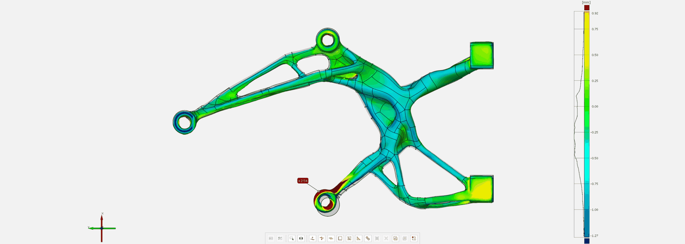
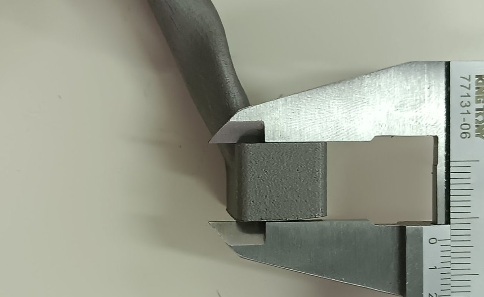
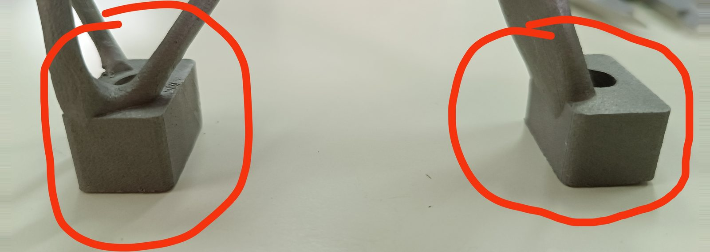
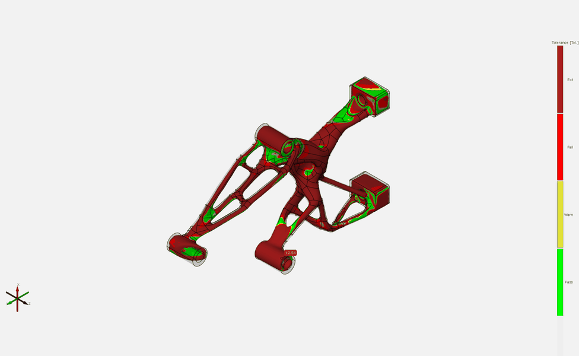

TUCer / Additive Manufacturing & Metrology · Technical University of Crete
Metal AM Motor Mount.
A generatively-designed motor mount ordered as a 316L metal 3D print, to recover the mass its machined predecessor had cost. It arrived distorted, measured at worst +2.54 mm against a +0.20 mm limit, 12.7 times the permitted deviation, and never went on the car — what it produced instead was a specification.

FIG. 01 — Scan-to-CAD deviation map, −1.27 to +0.92 mm, against a ±0.2 mm requirement
Why additive, and what was ordered
The machined AISI 304 mount that fixed TUCer's gear-misalignment problem fixed it the expensive way. Stiffness had to come from a dense material in a shape a 3-axis mill could reach, so the part landed at 496 g against the 438 g printed CF-PET-G bracket it replaced — 13.2% heavier, on a car whose entire design premise is energy efficiency.
Metal additive manufacturing was the obvious way to break that trade. Generative design produces organic, branching load paths; milling flattens them back into whatever a cutter can reach. A printer lifts most of that constraint, within its own limits on build volume, supports, orientation and finishing. So in 2024 the same component was re-ordered in 316L stainless from Conify, a metal AM startup, and redesigned at their request to fit inside their build volume.
What arrived, measured
The part looked wrong, so it was measured rather than argued about. It was scanned on a Revopoint POP 2 structured-light scanner and compared to the nominal CAD in GOM Inspect 2018 against the ±0.2 mm the assembly needed on its critical dimensions. That comparison is reverse engineering run backwards — instead of building geometry from a physical part, the same scanner and software measure a physical part against geometry that already exists.
Surface deviation ran from −1.27 mm to +0.92 mm: a 2.19 mm measured band against the 0.40 mm allowed, 5.5× too wide overall, with the worst single feature at +2.54 mm on a bore — 12.7× the tolerance. Several critical dimensions were out. The part could not be mounted on the vehicle. A calliper closed across the as-built bosses confirmed the scan by hand, independently of the software.
Worth saying plainly, because it sets a floor on what this kind of evidence costs: a consumer-grade scanner and a free copy of GOM Inspect produced measurements a supplier acted on. The errors were millimetre-scale, an order of magnitude above the noise floor — the measurement never needed to be finer than the tools were.

Reading the deviation field

The deviation field is coherent, not random, which is what points the diagnosis. The centre body pulls inward while the outer bosses push outward, and the largest errors sit at the extremities and at the bores nearest the plate interface. Random scatter would point at process noise or a bad scan. A field with a direction points at a force.
That force is residual stress, which the supplier also identified as the likely cause. Laser powder bed fusion melts and re-solidifies the part layer by layer, locking stress into it while the build plate holds it flat. Cut it free and it springs to a new equilibrium — which is exactly the shape the scan shows. Distortion after plate removal is not an exotic outcome; it is a known and controllable L-PBF failure mode.
A CAD file is not a specification
The supplier reached the same root cause independently, and named the reason it had not been prevented: nothing had been supplied beyond the geometry and the request to make that geometry printable within their build volume. With no tolerances stated, their workflow was never built to control distortion after plate removal.
That is a fair account, and the split is worth stating honestly. Our side: the part went out as geometry, not a specification — no tolerances, no datum scheme, no critical-feature callouts, no machining stock on the interfaces that had to fit, no mechanical property requirements. A full drawing existed for the machined version; no equivalent requirement set went out with the AM order. Their side: this failure mode is controllable, and without a stated tolerance there was no reason to build the orientation and stress-relief strategy that contains it.
Machining survives that gap, because a machinist works to nominal geometry and general tolerances are conventional. Additive does not. The process carries its own distortion physics, and it is the supplier who chooses the orientation, supports, stress relief and post-processing that control them — so withhold the requirements and they will optimise for the only thing they were given, which is printability. There was no reprint: the exchange ended with the supplier asking for the specification that should have gone out with the order in the first place.

What it produced
No reprint followed, so the machined AISI 304 mount stayed the part of record. What came out of this instead was a checklist: leave machining stock on every tolerance-bearing feature and finish it afterwards; define datums and tolerances before release rather than discovering them at assembly; treat distortion as a design input, because knowing where a part pulls in and pushes out tells you where to leave that stock; and route any manufacturability change back for review instead of accepting it at the supplier's end.
The conclusion that matters is the one that is easy to get wrong from a failed print: this as-built part did not hold the assembly’s critical tolerances, but additive was never the problem. Let the printer build the organic load-carrying structure it is uniquely good at, then machine the handful of flat and round features that actually have to fit.
The TUCer mount was machined in 2023 and re-attempted as a metal print in 2024. The lessons then informed a different motor mount, on a different car, in 2026. That last one is PYRFOROS IV's motor mount, 3D-printed aluminium with machined faces: 181 g, in service. Different team, different car, and none of this part carried over — what crossed was the specification practice, which is the only thing that could have.
One postscript, because it is more disarming than either half alone: the part now appears on Conify's homepage. It photographs well. It did not fit.